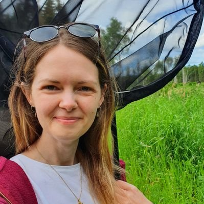
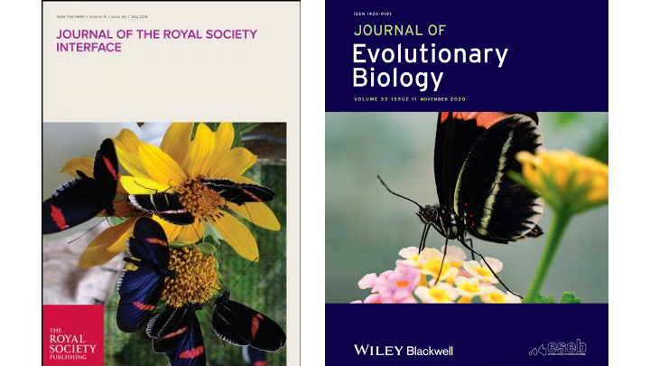
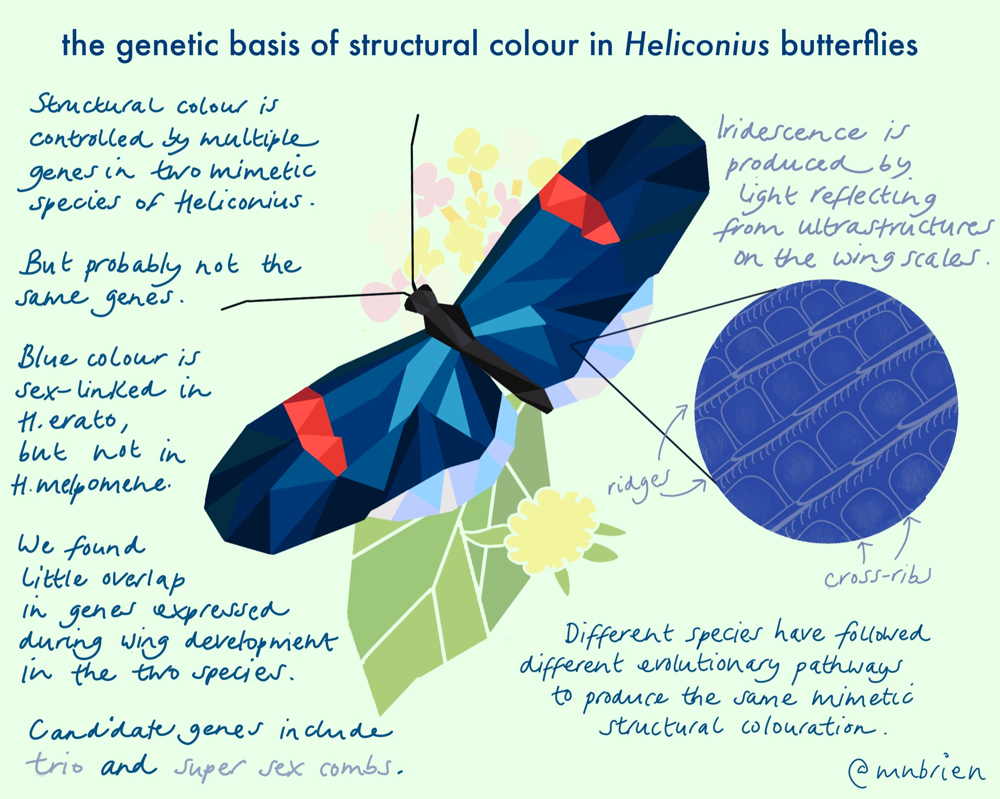

melanie.brien@helsinki.fi
Academy of Finland Postdoctoral researcher
Department of Biological & Environmental Sciences
University of Helsinki
Finland

I am postdoctoral researcher studying the genetics and evolution of colour and pattern in Lepidoptera. Currently I am focusing on the wood tiger moth as part of a collaborative project between the University of Helsinki, Finland, and the University of Cambridge, UK.
Projects
Colour polymorphism in the wood tiger moth, Arctia plantaginis
University of Helsinki, Finland and University of Cambridge, UK. Predator Prey Interactions group.
Colour is often used as an aposematic warning signal and predator learning is expected to lead to a single colour pattern within a population, but there are many puzzling cases where aposematic signals are also polymorphic. This can result from genetic correlations between the colour phenotype and other traits which have benefits in different contexts.
The wood tiger moth, Arctia plantaginis, uses bright hindwing colours as a signal of unpalatability. Males have discrete colour morphs which vary in frequency geographically. In Finland, both white and yellow morphs can be found and these colour morphs also differ in behavioural and life history traits, such as immunity, chemical defences and flight patterns.
A long-standing puzzle has been how complex polymorphisms such as these, where multiple traits are involved, are controlled genetically. Our current work aims to determine the genetic basis of multiple traits including male and female colouration, behaviour, and variation in chemical defences.
The genetic basis of structural colour in Heliconius butterflies
The University of Sheffield, UK. Nadeau Lab.
My PhD focused on iridescent structural colour in the Heliconius butterflies. Using phenotypic and genomic data, I looked at the genetic basis of this trait in two distantly related species. We found limited genetic parallels between the two species. I also looked at the condition dependence of this trait and how stress during development affects colour and scale structure. Thesis, 2019
Publications
- Brien MN*, Orteu A*, Yen EC, Galarza JA, Kirvesoja J, Pakkanen H, Wakamatsu K, Jiggins CD, Mappes J (2023). Colour polymorphism associated with a gene duplication in male wood tiger moths. eLife.
- Brien MN*, Enciso-Romero J*, Lloyd VJ*, Curran EV, Parnell AJ, Morochz C, Salazar PA, Rastas R, Zinn T, Nadeau NJ (2022). The genetic basis of structural colour variation in mimetic Heliconius butterflies. Philosophical Transactions of the Royal Society B, 377:20200505.
- Bainbridge HE*, Brien MN*, Morochz C, Salazar P, Rastas P, Nadeau NJ (2020). Limited genetic parallels underlie convergent evolution of quantitative pattern variation in mimetic butterflies. Journal of Evolutionary Biology. *Joint first authors.
- Brien MN, Enciso-Romero J, Parnell AJ, Salazar PA, Morochz C, Chalá D, Bainbridge HE, Zinn T, Curran EV, Nadeau NJ (2018). Phenotypic variation in Heliconius erato crosses shows iridescent structural colour is sex-linked and controlled by multiple genes. Interface Focus, 9.
- Parnell AJ, Bradford JE, Curran EV, Washington AL, Adams G, Brien MN, Burg SL, Morochz C, Fairclough JPA, Vukusic P, Martin SJ, Doak S, Nadeau NJ (2018). Wing scale ultrastructure underlying convergent and divergent iridescent colours in mimetic Heliconius butterflies. J. R. Soc. Interface, 15, 20170948.
- Hentley WT, Vanbergen AJ, Beckerman AP, Brien MN, Hails RS, Jones H & Johnson SN (2016). Antagonistic interactions between an invasive alien and a native coccinellid species may promote coexistence, Journal of Animal Ecology, 85, 1087-1097.
Graphical Abstracts
